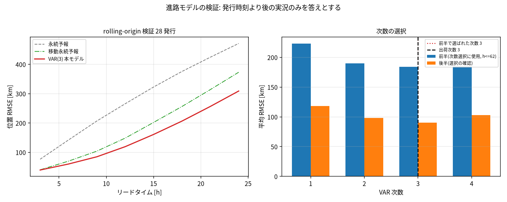
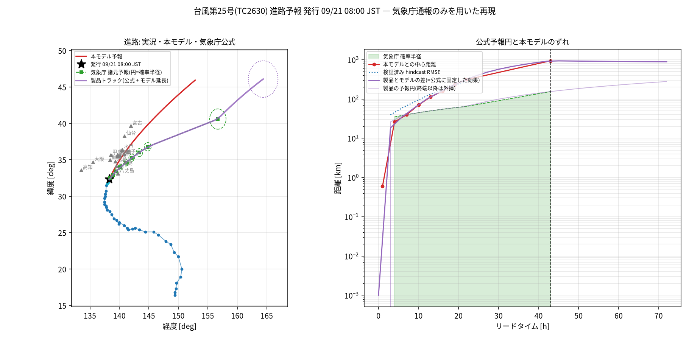

青破線=VAR自由運転(track_forecast.csv 3h刻み25点) / 緑実線=製品トラック公式区間(+43hまで)・橙破線=モデル延長 / 赤丸=JMA公式予報点(track_vs_official.csv 9点)+予報円 / ★=実況最終 32.3N 138.3E 965hPa 35m/s。クリックでリード・気圧・風速・予報円を表示。
予報終点
| トラック | 09/24 08:00 (+72h) | 気圧/風速 |
|---|---|---|
| VAR自由運転 | 45.943N, 152.854E | 991.5 hPa / 23.4 m/s (温低化) |
| 製品トラック | 46.095N, 164.390E | 991.5 hPa / 23.4 m/s (モデル延長) |
| JMA公式最長 (+43h 09/23 03:00) | 40.6N, 156.7E | 984 hPa / 25 m/s LOW |
JMA公式 vs モデル (track_vs_official.csv)
| lead | JST | JMA lat/lon | モデル lat/lon | 距離 | 予報円 | 圏内 |
|---|---|---|---|---|---|---|
| +1h | 09/21 09:00 | 32.5/138.4 | 32.50/138.40 | 1km | ― | |
| +4h | 09/21 12:00 | 32.9/138.9 | 33.07/138.71 | 26km | 35 | ○ |
| +7h | 09/21 15:00 | 33.4/139.4 | 33.63/139.07 | 40km | 40 | ○ |
| +10h | 09/21 18:00 | 34.0/140.2 | 34.19/139.46 | 71km | 45 | × |
| +13h | 09/21 21:00 | 34.6/141.1 | 34.75/139.88 | 112km | 50 | × |
| +16h | 09/22 00:00 | 35.3/142.1 | 35.32/140.34 | 160km | 55 | × |
| +19h | 09/22 03:00 | 36.0/143.4 | 35.88/140.82 | 233km | 60 | × |
| +22h | 09/22 06:00 | 36.8/144.8 | 36.45/141.33 | 312km | 65 | × |
| +43h | 09/23 03:00 | 40.6/156.7 | 40.45/145.54 | 943km | 155 | × |
8時刻中圏内2時刻(+7hまで)。最大偏差943km。強度差: 気圧MAE 3.2hPa相当・風速1.5m/s相当(公式9点)。
製品トラック 25行 (track_product.csv: 公式15行 + モデル延長10行)
出典: REPORT.md B2 / summary.json forecast.blend。予報円は公式最終点まで実値、以降は成長率4.3km/hで外挿(+72hで279km)。
hindcast検証 (28発行・リード3〜24h、発行より後の実況のみ)
VAR RMSE 171km(pooled) < 移動永続 188km < 永続 286km。永続比スキル +0.34〜+0.59。lead0は実況。


画像は同ディレクトリの既存PNGを相対参照。レポート本体: REPORT.md / 数値: summary.json / CSV: track_forecast.csv, track_product.csv, track_vs_official.csv
出典・再現性
fetch_typhoon_dujuan.py が気象庁製品を data/jma_typhoon_2625/ に固定取得 (manifest.json fetched_utc: 2026-09-21T00:32:36Z、再取得なし)。予報は発行時刻より前の通報だけで学習、公式予報とAMeDASは検証のみ。GitHub SMB-Chan/KMT arena/01a0bdaa-kmt、commit 5726cfb。本HTMLは results/typhoon_25_001/track_forecast.html (CSV埋め込み・決定論的表示)。